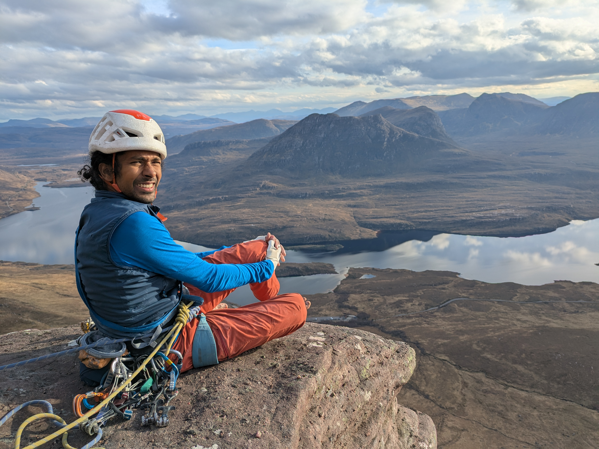

Nitin Chidambaram
Department of Mathematics, UNED Madrid

Department of Mathematics, UNED Madrid

I'm Nitin Chidambaram, currently a Ramón y Cajal researcher (tenure-track) at the mathematics department of UNED in Madrid.
Before that, I spent 3 years as a postdoc at the University of Edinburgh and 2 years as a postdoc at the Max Planck Institute for Mathematics, Bonn. I graduated with a PhD in Mathematics from the University of Alberta in 2020.
I'm broadly interested in algebraic geometry and physical mathematics, and in particular what ideas from physics can teach us about geometry. Among other things, I think about the Eynard-Orantin topological recursion, Airy structures, integrable hierarchies, the moduli space of curves, vertex algebras and the relationships between them.
You can also take a look at my CV below for more information.
Here is a list of my publications and preprints.
Full list also on arXiv.
I’m (co-)organizing:
Past:
Upcoming:
Recent past:
When I'm not doing math, I try to get outdoors as much as possible - climbing, skiing, or running for example. Here are some (older) pictures.
Sea cliffs on Berneray in the Outer Hebrides (Thanks Nick for the picture!)
If you want to chat about math (or go climbing/running), you can write me at nitin.chidambaram (at) mat.uned.es
{kind=link}
{kind=link}
{kind=link}